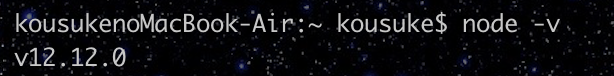

😆React環境構築☺️
may the code would be width you
may the code would be width you
目次
①以下のURLよりxcodeの取得
https://itunes.apple.com/jp/app/xcode/id497799835②以下のコマンドをターミナルで入力し専用のコマンドラインツールをインストールします。
コマンド：xcode-select --install
③以下のURLよりhomebrewの取得
https://brew.sh/index_ja.html④以下のコマンドをターミナルで入力してyarnをインストールしましょう！
コマンド：brew install yarn
html,cssでコーディングをしたことがある方は分かると思いますが、 一つのページ（シングルページ）を複数のファイル（モジュール）で作ることは多くありません。 ですがReactでは基本その様に作ります。一つ一つのファイルを一まとめにすること（バンドルと言います）がwebpackの役割だと思ってください。そしてこのwebpackは自分でカスタマイズすることが出来るのです！！bootstrapやcssをバンドルできる様になります。
webpackに引き続きyarnの説明です。yarnはここでは簡単にこう考えてください！！webpackを作動させる専門家だと！！webpack自体では動くことは出来ず、そのスイッチを押すのがミスターyarnなんです。同じものとしてnpmがありますが、yarnの方がスピードが早いのでnpmの上位互換と思ってもらえればいいのかなと思います！！
Node.jsみなんさん聞いたことはあるかもです...！！
そうですバックエンドの言語ですね！
なぜこれが必要かというとwebpackでゲットするツールがNodeで出来ているのでこれを処理するのに必要になって来るんです👍
先ずはこのNode.jsが入っているかを確認しましょう！
ターミナルでnode
-vと打ってみて下さい。
下記の様にバージョンが出ればそのまま使えます！！

そうじゃなかった場合ここでやってみましょう！
①以下のリンクから飛んでNode.jsをインストールします。
ページを開くと二つ出てくると思うので一般的に使われている左の方をダウンロードしましょう！！
windowsの方はまだyarnがインストールできていないはずです！！
ここでやって行きましょう！！
①以下のサイトより自身のOSに合ったNode.jsをインストールしていきましょう！
https://nodejs.org/en/③以下のサイトからyarnをインストール
https://yarnpkg.com/lang/ja/docs/install/#windows-stable
お疲れ様です！
これでmacもwindowsもYarn &
Nodeをインストール出来ているはずです💪
事前課題の最終章です！！ここはそんなに難しく考えないで下さい😆
①ターミナルを開いて
先ずはyarnをこれから使いますよ〜と宣言をします！
Reactを作動させるファイルを作成しgit
cdでホームディレクトリから降りてきます！！
そしてターミナルで下記の様にコマンドを打って下さい！！
コマンド：yarn init
コマンド：yarn add create-react-app
最終的にこの画面になれば成功です！！
お疲れ様でした〜😊